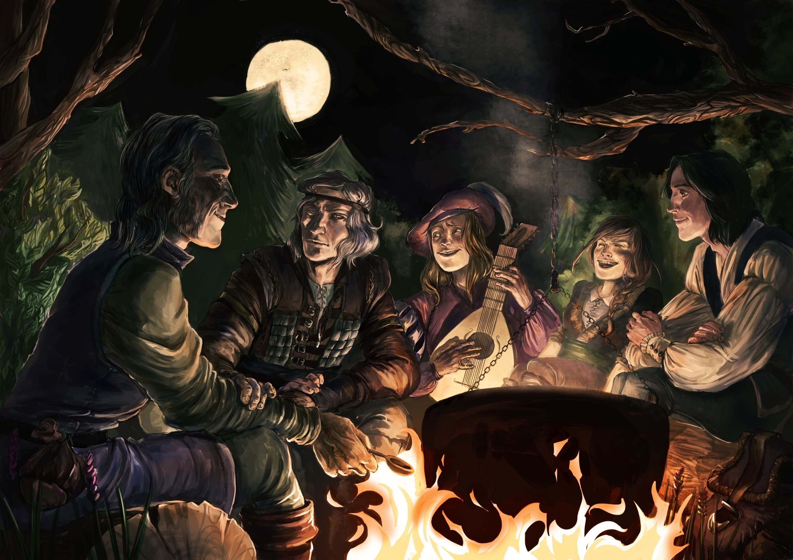
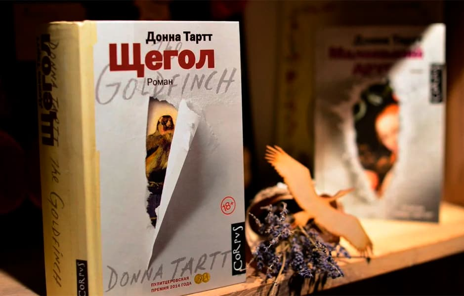
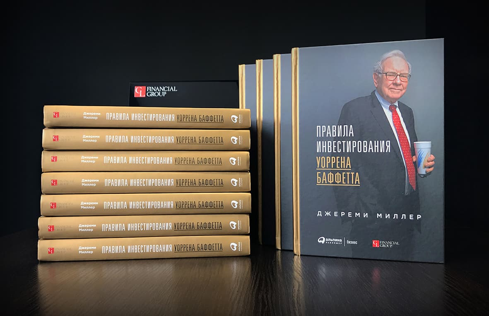

Анджей Сапковский
«Сага о ведьмаке»
Главным героем серии является Геральт из Ривии, ведьмак — наёмник, выполняющий заказы,
связанные с уничтожением бестий, представляющих угрозу для жизни людей.Основная работа
Геральта — за деньги уничтожать опасных чудовищ.

Очнувшись после взрыва в нью-йоркском Метрополитен-музее, тринадцатилетний Тео Декер
получает от умирающего старика кольцо и редкую картину авторства Карела Фабрициуса с
наказом вынести их из музея.

Миллер Джереми
Правила инвестирования
Уоррена Баффетта
Инвестиционного гуру Уоррена Баффетта многие называют "провидцем". Сам Баффетт говорит,
что предсказывать поведение рынка бессмысленно и только терпение, бережливость и
верность принципам помогут достичь долговременного успеха.